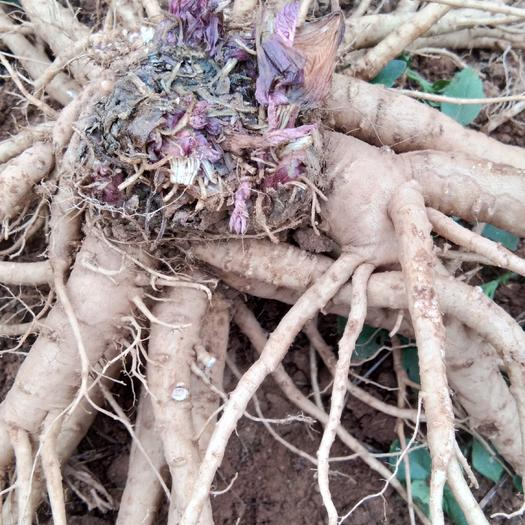

发表于 明代
上传于2021年12月4日
和其他民族医药一样，药物是彝族医药发展的基础。彝医的药物分植物、动物、矿物三部分...

-

呕血秘方
秘方:大蜘蛛网两块。 用法:将炒黄后研为细末，以温黄酒一次送服。 方解:本方贵州彝族民间秘而不传的特效验方。主治呕血患者。总治愈率达98%。显著奇效。随访多年未见复发。
-
皮肤顽固性瘙痒秘方
秘方:草莓、野饭豆各20g，甜白酒适量。用法:两味药煎服，以甜酒为引。方解∶草莓为蔷薇科植物白酒果(新平)。野饭豆为蝶形花科植物山豆根，性味:苦寒。两药配用有清火，解毒，祛风，止痒;甜白酒为引可将郁于肌肤之邪，宣达透表，风热之邪外出，痒疹消散，此方为彝族古籍中挖掘而出，十分珍贵。
-
彝族外疗
具有简,便,廉,效且无明显副作用的特点,是彝家山寨祖辈经常使用的特色方法和临床实践的结晶.彝医在治疗疾病中摸索出来的宝贵经验形成特色理论体系,指导着许多外疗法的产生,主要有药酒擦,彝药散敷,彝药洗,刮痧,针刺,拔罐,割治,按摩等
-
固肾培元药浴
中药成份：九节风、扶芳藤、大发散、大钻、淮通等云南独特气候下生成的珍稀中草药。 针对症状：体质虚弱、缺少体育锻炼喜欢泡浴蒸桑拿、处于亚健康状态者。 使用效果：改善体质虚弱现象、增强免疫力、调节皮肤吸收功能、恢复健康状态。 适用人群：男女老少皆宜。 温馨提示：十袋为一个疗程，每隔一天泡浴一次。
-
舒筋活络药浴
中药成份：穿破石、九牛藤、大发散、软筋藤等云南独特气候下生成的珍稀中草药。 针对症状：颈椎、腰椎劳损，风湿，内风湿，腰酸背痛，循环不畅，肌肉酸痛。 使用效果：舒筋活络、活血化瘀、促进血液循环、消炎止痛、对各类风热湿毒引起的风湿骨痛、关节疼痛有显著改善作用。 适用人群：本品属天然民间奇方，男女老少皆宜。 使用小秘方：风湿较重部位可采用局部热敷，效果更佳 温馨提示：十袋为一个疗程，每隔一天泡浴一次
-
安心养神药浴
中药成份：透骨草、善药、合欢、郁金等云南独特气候下生成的珍稀中草药。 针对症状：疲倦、精力减退、记忆衰退、神经衰弱、失眠、心悸、健忘、皱纹渐增。 使用效果：精力旺盛、消除疲劳、体力恢复、面色红润、光泽肌肤、皱纹渐消、改善的心脏输出量、增强心脏的供血功能、显著改善血液循环及全身微循环、焕发生命固有活力 温馨提示：十袋为一个疗程，每隔一天泡浴一次。
上传于2021年12月4日
彝族山茱萸果酒，其特征是所述的山茱萸果酒是由300500重量份山茱萸鲜果的酿造酒和白酒浸泡中药的所制得的药酒按比例勾兑而成。本发明以山茱萸鲜果为主通过发酵和配加中药浸提原酒而成的山萸酒，通过科学的组方，使单纯的山茱萸滋肝补肾作用更加突出，同时又使山茱萸酒的保健功效更加协调全面。对于中老年人肝肾虚，脾胃弱，腰腿痛等普遍存在的身体不适针对性强，同时又解决了睡眠不香的问题，阴阳气血互补，配伍组方合理，疗效明显。